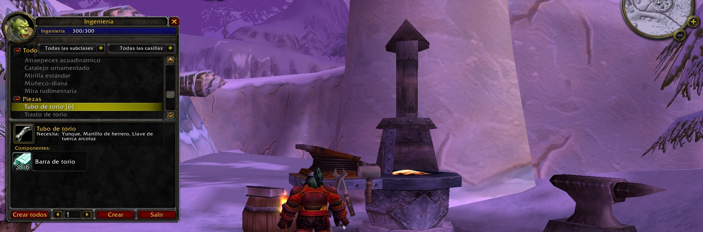

Los ingenieros aprovechan su creatividad para fabricar una inmensa (y a veces aleatoria) variedad de objetos útiles. Trasteando sin descanso y lidiando con fallos continuos, un ingeniero puede crear objetos totalmente únicos: potenciadores de vista, armas potentes, mascotas robots... Los ingenieros más hábiles utilizan sus inventos para resolver problemas y hacer que sus vidas y las de sus compañeros sean más fáciles, dinámicas y mejores.
La mayoría de los esquemas de ingeniería se pueden fabricar en cualquier parte, siempre y cuando tengas los materiales necesarios para dar forma a tu creación.
Suele ser muy común que los ingenieros se especialicen también en minería: los metales y menas que se obtienen de esta manera sirven para construir sus invenciones.
A medida que progreses en el arte de la ingeniería, tendrás la oportunidad de elegir una especialización. Tras completar una misión especial, podrás especializarte en ingeniería goblin o gnómica. Cada escuela de ingeniería se especializa en la creación de objetos únicos, algunos de los cuales no están disponibles para la otra rama de la profesión.
Como sucede con cualquier profesión, nuestra primera parada debe ser junto al instructor de ingeniería (Orgrimmar, Ventormenta...) para que nos enseñe esta profesión primaria y el desarrollo de habilidad "Aprendiz ingeniero" que nos permitirá ponernos manos a la obra con esta profesión.
La presente guía la dividiremos en tres partes. La primera se centrará en detallaros los materiales necesarios para subir la profesión, la segunda, el método para llegar a los 300 puntos con ingeniería y por último, las dos especializaciones de ingeniería.

Materiales necesarios
Vamos a pasar a listaros todos los materiales necesarios para subir la profesión de ingeniería. Este listado dependerá de la suerte que tengamos a la hora de subir los puntos de dicha profesión, por lo que podréis necesitar un poco más o menos de los materiales que vamos a citar a continuación (están excluidos los materiales comprados al vendedor):
- 62 unidades de Piedra férrea
- 44 unidades de Barra de cobre.
- 33 unidades de Piedra burda.
- 10 unidades de Barra de plata.
- 69 unidades de Barra de bronce.
- 7 unidades de Paño de lana.
- 75 unidades de Piedra pesada.
- 61 unidades de Cuero pesado.
- 4 unidades de Barra de acero.
- 100 unidades de Piedra sólida.
- 21 unidades de Barra de hierro.
- 110 unidades de Barra de mitril.
- 5 unidades de Paño de tejido mágico.
- 44 unidades de Piedra densa.
- 168 unidades de Barra de torio.
- 32 unidades de Paño rúnico.
Ingeniería 1-75
Una vez hemos aprendido el rango "Aprendiz ingeniero" procederemos a realizar las siguientes recetas para subir la profesión a 75 puntos de habilidad.
- Pólvora férrea: hasta llegar a los 40 puntos de habilidad (62 unidades creadas aproximadamente).
- Puñado de tornillos de cobre: hasta llegar a los 54 puntos de habilidad (18 unidades creadas aproximadamente).
- Llave de tuerca arcoluz: hasta llegar a los 55 puntos de habilidad (1 unidad creada).
- Tubo de cobre: hasta llegar a los 65 puntos de habilidad (10 unidades creadas).
- Bocarda férrea: hasta llegar a los 75 puntos de habilidad (10 unidades creadas).
Llegados a este punto, regresaremos con nuestro instructor de profesión para aprender la habilidad "Oficial ingeniero" y continuar subiendo nuestra profesión.
Ingeniería 75-150
Continuamos realizando las siguientes recetas:
- Pólvora burda: hasta llegar a los 95 puntos de habilidad (23 unidades creadas aproximadamente).
- Contacto de plata: hasta llegar a los 105 puntos de habilidad (10 unidades creadas).
- Tubo de bronce: hasta llegar a los 120 puntos de habilidad (17 unidades creadas aproximadamente).
- Bomba de bronce pequeña: hasta llegar a los 125 puntos de habilidad (7 unidades creadas aproximadamente).
- Pólvora potente: hasta llegar a los 145 puntos de habilidad (tendremos que crear un total de 75 unidades para que podamos continuar con las siguientes recetas que nos piden este material).
- Bomba de bronce grande: hasta llegar a los 150 puntos de habilidad (7 unidades creadas aproximadamente).
Una vez alcanzamos los 150 puntos de habilidad, es el momento de regresar junto a nuestro instructor de profesión para aprender la habilidad "Experto ingeniero" y continuar subiendo nuestra profesión de ingeniería.
Ingeniería 150-225
A continuación, procederemos a comprar una de las siguientes recetas dependiendo de nuestra facción:
- Esquema: fuegos artificiales rojos: vendido por Sovik en Orgrimmar.
- Esquema: fuegos artificiales azules: vendido por Darian Singh en Ventormenta o Cortallave Volopiñón en Forjaz.
- Esquema: fuegos artificiales verdes: vendido por Dentolio en los Baldíos.
En nuestro caso, al realizar la guía con un personaje Horda, compraremos el Esquema: fuegos artificiales rojos y continuaremos subiendo la profesión.
- Fuegos artificiales rojos: hasta llegar a los 175 puntos de habilidad (61 unidades creadas aproximadamente).
- Microajustador giromático: hasta llegar a los 176 puntos de habilidad (1 unidad creada).
- Pólvora sólida: hasta llegar a los 190 puntos de habilidad (tendremos que crear un total de 50 unidades para que podamos continuar con las siguientes recetas que nos piden este material).
- Bomba de hierro grande: hasta llegar a los 195 puntos de habilidad (7 unidades creadas aproximadamente).
- Tubo de mitril: hasta llegar a los 205 puntos de habilidad (14 unidades creadas aproximadamente).
- Activador inestable: hasta llegar a los 210 puntos de habilidad (5 unidades creadas aproximadamente).
- Balas de mitril de gran impacto: hasta llegar a los 225 puntos de habilidad (20 unidades creadas aproximadamente).
Alcanzados los 225 puntos de habilidad en ingeniería, es el momento de dirigirnos hasta Gadgetzan para hablar con Buzzek Giracorchete y nos enseñe la habilidad "Ingeniero artesano" para afrontar el último paso para subir Ingeniería.
Ingeniería 225-300
Continuamos realizando las siguientes recetas:
- Envoltura de mitril: hasta llegar a los 235 puntos de habilidad (11 unidades creadas aproximadamente).
- Bomba altamente explosiva: hasta llegar a los 245 puntos de habilidad (12 unidades creadas aproximadamente).
- Girotiro de mitril: hasta llegar a los 250 puntos de habilidad (5 unidades creadas aproximadamente).
- Pólvora densa: hasta llegar a los 260 puntos de habilidad (22 unidades creadas aproximadamente).
- Trasto de torio: hasta llegar a los 290 puntos de habilidad (32 unidades creadas aproximadamente).
Para completar la profesión, tendremos que dirigir nuestros pasos hasta Vista Eterna (Cuna del Invierno). Allí encontraremos a Xizzer Raybuja, el cuál, nos venderá el Esquema: tubo de torio.
- Tubo de torio: hasta llegar a los 300 puntos de habilidad (12 unidades creadas aproximadamente).
